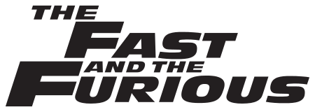

| Imagen | Descripción | Fecha de Lanzamiento |
|---|---|---|
|  | La saga se inicia con The Fast and the Furious (2001), con un joven oficial de policía Brian O'Conner (Paul Walker) con la ayuda del FBI, entra en el mundo del tunning para desenmascarar las carreras ilegales de Dominic Toretto (Vin Diesel), pero todo se complica cuando se enamora de su hermana Mia Toretto (Jordana Brewster). | |
| Toretto había huido a República Dominicana donde corría y robaba junto a Han (Sung Kang), Rico Santos (Don Omar), Tego Leo (Tego Calderón) y a su novia, Leticia «Letty» Ortiz (Michelle Rodríguez). Luego Toretto huye a Panamá. Al inicio Han toma protagonismo, haciendo referencia a marcharse a Tokio porque están armando algo grande | ||
| En esta película, la banda deben huir del cazador Luke Hobbs (Dwayne Johnson) y Elena Neves (Elsa Pataky). También arman un equipo, integrado por Dominic Toretto (Vin Diesel), Brian O'Conner (Paul Walker), Roman Pearce (Tyrese Gibson), Tej Parker (Chris Bridges), Gisele Yashar (Gal Gadot), Han Lue (Sung Kang), Leo Tego (Tego Calderón) y Rico Santos (Don Omar) para robar el dinero de un traficante y multimillonario de Río | ||
| Después de encargarse de Owen Shaw y sus secuaces en la sexta entrega, Dominic Toretto (Vin Diesel), Brian O'Conner (Paul Walker), Letty Ortiz (Michelle Rodriguez), Mia Toretto (Jordana Brewster), Roman Pearce (Tyrese Gibson) y Tej Parker (Ludacris) vuelven a los Estados Unidos y comienzan a vivir tranquilamente de nuevo, como siempre habían querido. Sin embargo, el hermano mayor de Owen, Deckard Shaw (Jason Statham), quiere buscar venganza por dejar inconsciente a su hermano. | ||
| Ahora que Dominic Toretto y su esposa, Letty están de luna de miel y Brian y Mia se han retirado del juego, el resto del equipo ha sido exonerado y ha encontrado el camino a una vida normal. Pero cuando una misteriosa mujer llamada Cipher (Charlize Theron) seduce a Dom en un mundo de crimen del cual parece no poder escapar deberá traicionar a sus seres más cercanos. |
La saga ha tenido un gran éxito comercial y es la franquicia más grande de Universal con $5,891 millones de dólares en taquilla.
Una nueva atracción, Fast & Furious: Supercharged, se abrió como parte del Studio Tour en Universal Studios Hollywood en 2015. El tranvía de la gira pasa el negro Dodge Charger utilizado en la quinta película, mientras se muestra a los pasajeros un video de Luke Hobbs, quien les informa que un testigo de gran valor buscado por Owen Shaw está en el tranvía. El tranvía ingresa a una fiesta de almacén, donde el elenco aparece a través de un efecto Fantasma de Pepper, antes de que el FBI cierre la fiesta y el tranvía se mueve a un simulador de movimiento donde se produce una secuencia de persecución, dirigida por Roman Pearce, Letty Ortiz y Dominic Toretto